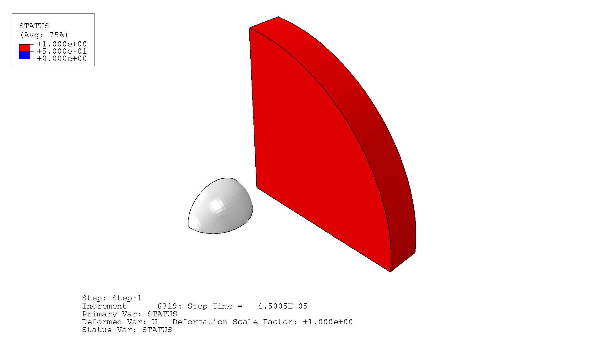
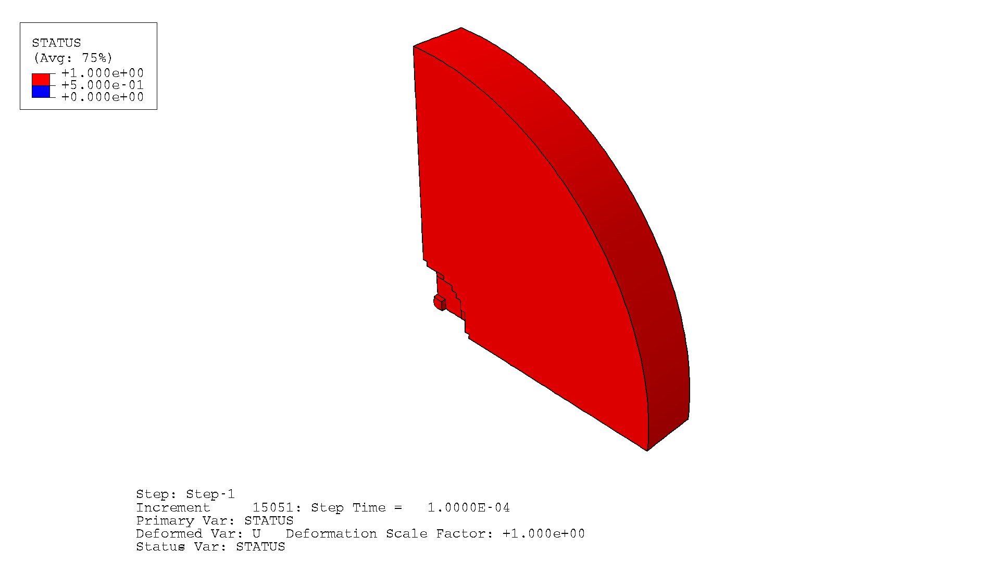

Full Flat.inp-scale verification (24,000 VU1 hosts + 24,000 native ghost C3D8Rs + 125 embedded fibers) of the mesher's new --host-mode vuel-ghost path: does the native ghost element, added specifically to work around VUEL's inability to trigger Abaqus element deletion directly, actually disappear at the same moment the VUEL's own failure criterion fires?
SynchronizedCumulative ghost elements deleted over the impact step. Nothing happens for the first ~50 μs — the ball hasn't yet loaded the plate hard enough. Once it does, deletion cascades fast (roughly 50–70 μs) then tapers off as the damaged region stabilizes.
Whole-model kinetic energy (ALLKE), internal energy (ALLIE), and total energy (ETOTAL) across the step. External work (ALLWK) stays at exactly zero throughout — there's no prescribed external load in this deck, only the initial velocity condition, so that's expected rather than a bug.
KE drops 4203→3800 (mJ-equivalent units) as the plate absorbs the impact; IE climbs 0→218.6 as plasticity and damage dissipate it; total drops 4203→4043 (~3.8%), consistent with damage/erosion removing energy from the system rather than a conservation error. No spikes or sign reversals anywhere in the 1001-sample history.
GHOST STATUS — the native ghost plate, colored by Abaqus's own STATUS field (red = intact, blue = deleted). This is the direct view of the fix working: the ghost disappears in the same spot, at the same time, as the VUEL's independent failure trigger.
240 frames, 30 fps, step time 45–100 μs. Ball-1 included for context; camera fixed from the first frame.


DISPLACEMENT — the same window, Plate-1 and Ball-1 colored by nodal displacement magnitude.
FIBERS — deformed diagnostic ghost hosts rendered as a wireframe outline (no filled host faces) with the embedded T0/T90 fiber network drawn opaque bright red, fully visible with nothing obstructing it. Ball-1 is wireframe too, as a side effect of the global wireframe render style. This is the direct visual check that the mesher's embedded-fiber geometry survives into the VUEL+ghost host path, not just the diagnostic CSVs.
240 frames, 30 fps, step time 45–100 μs, same fixed camera as the other two passes. An earlier translucent-shaded-host version (tested at 65%, 85%, and 100% translucency, opaque fiber/ball leaf colors) never looked properly see-through at any value — Abaqus's shaded-translucency compositing has a hard visual ceiling in this batch-rendering context, confirmed by testing the parameter's own maximum. A two-display-group approach (wireframe host, shaded fibers/ball, in one viewport) hit two independent read-only-object errors on real Abaqus 2024 (DGCommonOptions supports neither .setValues() nor plain attribute assignment post-construction) across two separate fix attempts, suggesting that API path isn't viable at all. The version shown here instead sets the whole viewport to a single global wireframe render style with thin edges — simple, low-risk, and it fully solves the see-through problem: the dense 125-fiber T0/T90 grid, previously hidden as sparse flecks behind the shaded host, is now completely visible. Trade-off, accepted: Ball-1 loses its solid fill and renders as an outline too, since wireframe mode doesn't fill any leaf's faces regardless of color overrides or translucency value. Same known Ball-1 camera-clipping behavior as the displacement pass above still applies.
Five rounds on ROAR, each gated on the previous one's actual output rather than assumed success:
| Check | Result |
|---|---|
| Clean completion, no NaN/errors | pass |
| Element bookkeeping (51,437 = 24,000 VU1 + 24,000 ghost + 125 fiber + 3,312 ball) | exact |
| Deletion timing vs. VUEL failure | ~107ns apart (sampling-limited) |
| Abaqus-reported model mass | not measured — no *Mass Properties request in this deck |
| Geometry | flat only — curved layup path unverified |
The sampling interval above (1001 field-output frames across the step) is coarser than the actual solver increment (~15,051 increments), so "107 ns apart" is the tightest bound this particular check can show, not a literal single-increment measurement. The VUEL's engineering-strain criterion and the ghost's native PEEQ-based ductile criterion are genuinely different measures; that they land this close together is evidence the calibration is right, not a mathematical guarantee it always will be.